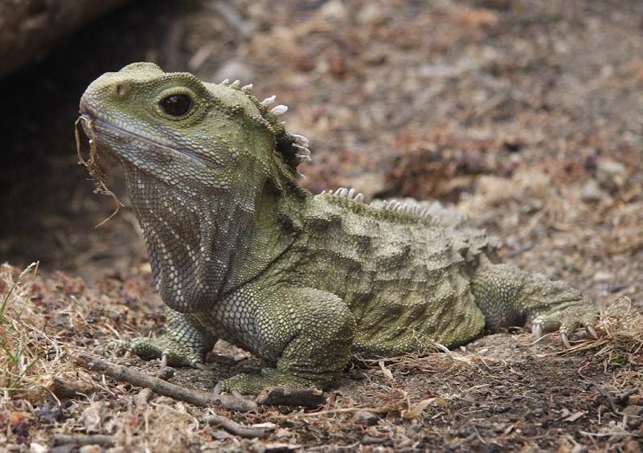
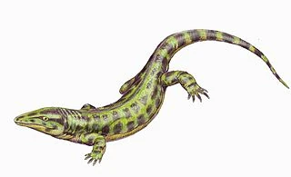
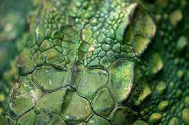
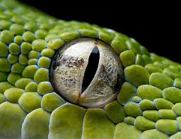
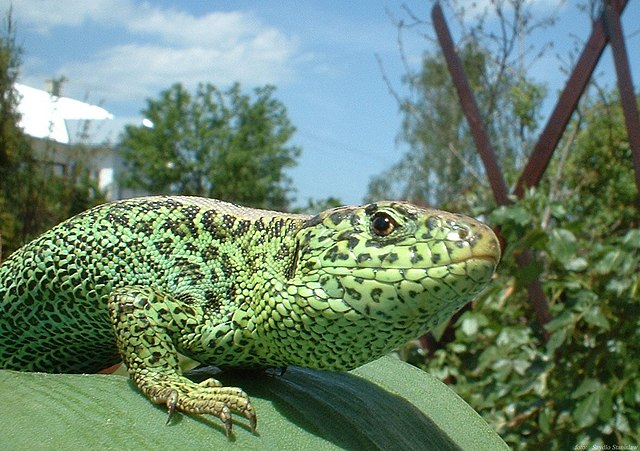
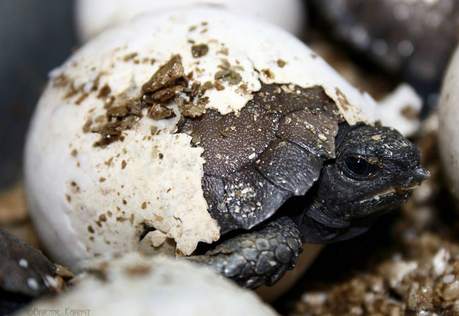
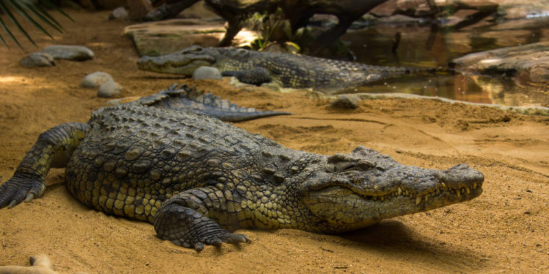

Vertebrados
¿Qué son los reptiles?
Los reptiles (Reptilia, del latín reptĭlis -que se arrastra-), son una clase de animales vertebrados amniotas provistos de escamas epidérmicas de queratina. Pertenece a la taxonomía tradicional, pero de acuerdo con la sistemática cladística actual, es un grupo parafilético, es decir, que no incluye a todos los descendientes del ancestro común (pues deja fuera a las aves por lo que no tiene valor filogenético desde el punto de vista de la Biología). Aunque una redefinición moderna de Reptilia es la que incluye a las aves, pero excluye a los sinápsidos, que condujeron a los mamíferos, ya que ha quedado demostrado que no eran reptiles.

Definición de reptil
Origen evolutivo

Los reptiles se originaron a partir de los reptiliomorfos un grupo de tetrápodos que poseía características tanto de anfibio como de reptil, en los humeantes pantanos del periodo Carbonífero hace unos 310-320 millones de años, diversificándose la mayoría de los linajes durante el Mesozoico. A finales de esta era desaparecieron casi por completo varios grupos en la gran extinción masiva del Cretácico-Terciario, hace unos 65 millones de años.
El animal más antiguo conocido que puede haber sido un amniota es Casineria (aunque puede haber sido un temnospóndilo). Una serie de huellas de los estratos fósiles de Nueva Escocia datan de 315 millones de años que muestran dedos típicos de reptiles y huellas de escamas. Estas huellas se atribuyen a Hylonomus, el reptil incuestionable más antiguo que se conoce. Era un animal pequeño, parecido a un lagarto, de unos 20 a 30 centímetros (7,9 a 11,8 pulgadas) de largo, con numerosos dientes afilados que indicaban una dieta insectívora.

Características
Piel y muda
La piel de los reptiles está cubierta por una epidermis córnea, lo que la hace impermeable y permite que los reptiles vivan en tierra firme, a diferencia de los anfibios. En comparación con la piel de los mamíferos, la de los reptiles es bastante delgada y carece de la capa dérmica gruesa que produce el cuero en los mamíferos. Las partes expuestas de los reptiles están protegidas por escamas, a veces con una base ósea (osteodermos), formando una armadura. En los lepidosaurios, como los lagartos y las serpientes, toda la piel está cubierta de escamas epidérmicas superpuestas. Alguna vez se pensó que tales escamas eran típicas de la clase Reptilia en su conjunto, pero ahora se sabe que es propia de los lepidosaurios. Las escamas que se encuentran en las tortugas y los cocodrilos son de origen dérmico, en lugar de epidérmico, y se denominan correctamente escudos. En las tortugas, el cuerpo está cubierto un caparazón duro compuesto de escudos fusionados
Los reptiles mudan su piel a través de un proceso llamado ecdisis que ocurre continuamente a lo largo de su vida. En particular, los reptiles más jóvenes tienden a mudar una vez cada 5 a 6 semanas, mientras que los adultos mudan de 3 a 4 veces al año. Los reptiles más jóvenes mudan más debido a su rápida tasa de crecimiento. Una vez que el tamaño completo, la frecuencia de muda disminuye drásticamente. El proceso de ecdisis implica formar una nueva capa de piel debajo de la anterior. Las enzimas proteolíticas y el líquido linfático se secretan entre las capas nueva y vieja de la piel. En consecuencia, esto levanta la piel vieja de la nueva permitiendo que se produzca el desprendimiento. Las serpientes mudarán de la cabeza a la cola mientras que los lagartos mudan en un "patrón irregular". La disecdisis es una enfermedad cutánea común en serpientes y lagartos, se produce cuando falla la ecdisis o muda. Existen numerosas razones por las que la muda falla y puede estar relacionada con humedad o temperatura inadecuada, deficiencias nutricionales, deshidratación y lesiones traumáticas. Las deficiencias nutricionales disminuyen las enzimas proteolíticas, mientras que la deshidratación reduce los fluidos linfáticos para separar las capas de la piel. Las lesiones traumáticas, por otro lado, forman cicatrices que no permitirán que se formen nuevas escamas e interrumpan el proceso de ecdisis.

Visión
La mayoría de los reptiles son animales diurnos. La visión se adapta típicamente a las condiciones de la luz del día, con visión en color y percepción de profundidad visual más avanzada que en los anfibios y la mayoría de los mamíferos. Los reptiles suelen tener una excelente visión, lo que les permite detectar formas y movimientos a largas distancias. A menudo tienen solo unas pocas células bastón y tienen mala visión en condiciones de poca luz. Al mismo tiempo, tienen células llamadas "conos dobles" que les dan una visión de color nítida y les permiten ver longitudes de onda ultravioleta. En algunas especies, como las serpientes ciegas, la visión se reduce. Muchos lepidosaurios tienen un órgano fotosensorial en la parte superior de la cabeza llamado ojo parietal, que también se llama tercer ojo, ojo pineal o glándula pineal
Este "ojo" no funciona de la misma manera que un ojo normal, ya que solo tiene una retina y un cristalino rudimentarios y, por lo tanto, no puede formar imágenes. Sin embargo, es sensible a los cambios de luz y oscuridad y puede detectar movimiento. Algunas serpientes tienen conjuntos adicionales de órganos visuales (en el sentido más amplio de la palabra) en forma de fosas sensibles a la radiación infrarroja (calor). Estos pozos sensibles al calor están particularmente bien desarrollados en las víboras de pozo, pero también se encuentran en boas y pitones. Estos pozos permiten a las serpientes sentir el calor corporal de aves y mamíferos, lo que permite a las víboras cazar roedores en la oscuridad. La mayoría de los reptiles, incluidas las aves, poseen una membrana nictitante, un tercer párpado translúcido que se dibuja sobre el ojo desde la esquina interior. En particular, protege la superficie del globo ocular de un cocodrilo al tiempo que permite cierto grado de visión bajo el agua. Sin embargo, muchos escamosos como lagartijas y serpientes en particular, carecen de párpados, que son reemplazados por una escala transparente. A esto se le llama brille, espectáculo o gorra. El brille generalmente no es visible, excepto cuando la serpiente muda, y protege los ojos del polvo y la suciedad.[

Respiración
Todos los reptiles respiran a través de pulmones. Las tortugas acuáticas han desarrollado una piel más permeable y algunas especies han modificado su cloaca para aumentar el área de intercambio de gases. Incluso con estas adaptaciones, la respiración nunca se logra por completo sin los pulmones. La ventilación pulmonar se logra de manera diferente en cada grupo principal de reptiles.
En escamosos, los pulmones son ventilados casi exclusivamente por la musculatura axial. Esta también es la misma musculatura que se usa durante la locomoción. Debido a esta restricción, la mayoría de los escamosos se ven obligados a contener la respiración durante las carreras intensas. Algunos, sin embargo, han encontrado una forma de evitarlo. Los varanos y algunas otras especies de lagartos, emplean el bombeo bucal como complemento a su "respiración axial" normal. Esto permite que los animales llenen completamente sus pulmones durante la locomoción intensa y, por lo tanto, permanezcan aeróbicamente activos durante mucho tiempo.
Se sabe que los lagartos poseen un proto-diafragma, que separa la cavidad pulmonar de la cavidad visceral. Si bien no son realmente capaz de moverse, permite un mayor inflado de los pulmones, al quitar el peso de las vísceras de los pulmones. Los cocodrilos en realidad tienen un diafragma muscular que es análogo al diafragma de los mamíferos. La diferencia es que los músculos del diafragma de cocodrilos tiran del pubis (parte de la pelvis, que es móvil en los cocodrilos) hacia atrás, lo que hace descender el hígado, liberando así espacio para que los pulmones se expandan. Este tipo de configuración diafragmática se ha denominado "pistón hepático". Las vías respiratorias forman una serie de cámaras tubulares dobles dentro de cada pulmón. Al inhalar y exhalar, el aire se mueve a través de las vías respiratorias en la misma dirección, creando así un flujo de aire unidireccional a través de los pulmones. Un sistema similar se encuentra en aves, lagartos monitores e iguanas. La mayoría de los reptiles carecen de un paladar secundario, lo que significa que deben contener la respiración al tragar. Los cocodrilos han desarrollado un paladar secundario óseo que les permite seguir respirando mientras permanecen sumergidos (y protegen sus cerebros contra el daño de las presas que luchan). Los eslizones (familia Scincidae) también han desarrollado un paladar secundario óseo, en diversos grados. Las serpientes adoptaron un enfoque diferente y en su lugar extendieron su tráquea. Su extensión traqueal sobresale como una pajita carnosa y permite a estos animales tragar presas grandes sin sufrir asfixia.[

Reproducción
Los reptiles generalmente se reproducen sexualmente, aunque unos pocos son capaces de reproducirse asexualmente por partenogénesis. Toda la actividad reproductiva ocurre a través de la cloaca, la única salida/entrada en la base de la cola donde también se eliminan los desechos. La mayoría de los reptiles tienen órganos copuladores, que suelen estar retraídos o invertidos y almacenados dentro del cuerpo.
En las tortugas y los cocodrilos, el macho tiene un solo pene mediano, mientras que los escamosos, incluidas las serpientes y los lagartos, poseen un par de hemipenes, de los cuales solo uno se usa típicamente en cada sesión. Sin embargo, los tuátaras carecen de un pene, por lo que el macho y la hembra simplemente deben presionar sus cloacas juntas mientras el macho descarga el esperma. La mayoría de los reptiles ponen huevos amnióticos cubiertos con cáscaras de cuero o calcáreas. Un amnio, corion y alantoide están presentes durante el desarrollo embrionario. La cáscara de huevo (1) protege al embrión (11) y evita que se seque, pero es flexible para permitir el intercambio de gases. El corion (6) ayuda en el intercambio de gases entre el interior y el exterior del huevo. Permite que el dióxido de carbono salga del huevo y que el oxígeno entre en el huevo. La albúmina (9) protege aún más al embrión y sirve como depósito de agua y proteínas. La alantoides (8) es un saco que recoge los desechos metabólicos producidos por el embrión. El saco amniótico (10) contiene líquido amniótico (12) que protege y amortigua al embrión. El amnio (5) ayuda en la osmorregulación y sirve como depósito de agua salada. El saco vitelino (2) que rodea la yema (3) contiene nutrientes ricos en proteínas y grasas que son absorbidos por el embrión a través de los vasos (4) que permiten que el embrión crezca y se metabolice. El espacio de aire (7) proporciona oxígeno al embrión durante la eclosión. Esto asegura que el embrión no se asfixie mientras está eclosionando. No existen etapas larvales de desarrollo. La viviparidad y la ovoviviparidad han evolucionado en muchos clados extintos de reptiles y en escamosos. En el último grupo, muchas especies, incluidas todas las boas y la mayoría de las víboras, utilizan este modo de reproducción. El grado de viviparidad varía; algunas especies simplemente retienen los huevos hasta justo antes de la eclosión, otras proporcionan alimento materno para complementar la yema, y otras carecen de yema y proporcionan todos los nutrientes a través de una estructura similar a la placenta de los mamíferos. Se ha identificado reproducción asexual en escamosos en seis familias de lagartos y una de serpiente.

Distribución y hábitat
